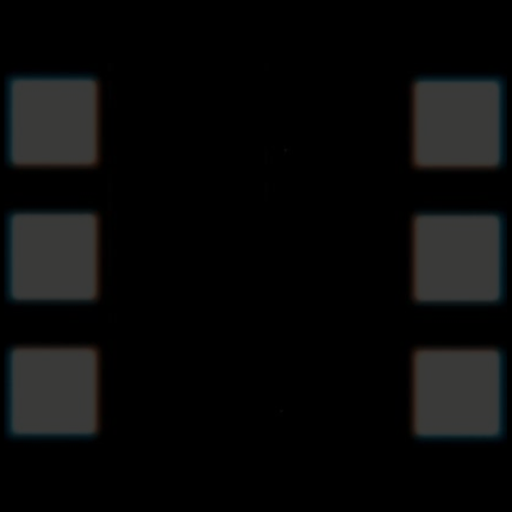
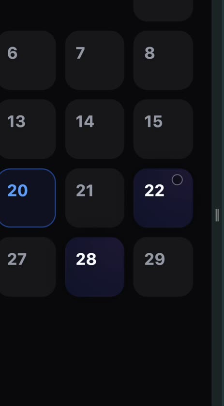

Where you overruled rev A.
Criterion owns a circle. Your clapstick instinct also gave the whole system its atom.
The calendar stays, enhanced. You were describing HomeV2 — which you already built.
Print for everyone. The Cut earned by logging. The Year in December.
Every surface keeps its route and gets a job inside one system.
Six takes. One selected. The clapstick's stripes, abstracted — never a clapperboard.
Six parallelograms, pitch 24, sheared exactly one pitch so each bar's foot sits under the previous bar's head. SVG only. Never on a plate.
The lit bar is the whole idea — six takes, one kept. The name, drawn.

The shipped icon is dark-grey sprockets on pure black — on a home screen it reads as an empty rectangle. Pure high-contrast diagonal survives anywhere.
| ring | Criterion owns a circle. Crowded category. Decorative only — it had one job. |
| clapstick | Cinema at a glance. Unmistakable at 60px. And the bar becomes the atom of the entire system — seven jobs, next panel. |
The bars clap shut and rebound. 380ms, spring 500/22, one heavy haptic. The brand in a gesture.
This is what the ring could not do. One shape, seven jobs — and your sprocket date strip falls out of the logo instead of being designed separately.
One bar per day. Each carries the colour of what you watched. One detent and one selection haptic per bar.
365 bars. The contribution-graph texture you described, except every mark is a real film in its own colour. Zooms like iPhone Photos: day → month → year.
Plus the perforation on a Ticket stub. Same shape, everywhere, at every scale.
The readiness score, made honest — and the daily three. Together they close the loop that has been open since the first commit.
Soft. You haven't logged in nine days.
Sharp. Two logs did that.
Focus doesn't measure whether you are ready — you always are. It measures how sharply Selects has you in focus. That's computable, it's decomposable, and critically it decays.
| Depth | imports and logs. Your floor — never decays. |
| Freshness | days since your last log. This is the loop. |
| Clarity | do your recent picks share facets, or are you scattered? |
| Context | time, weather, showtimes near you, hours free. |
Freshness decaying is the first thing in the product where investment loads the next trigger — the Hook row that scored 0.
And the torn stub is the only feature that tells you when someone is inside a film — which is what makes 11:40pm possible.
You rejected warm-versus-cool and described something better: dark, multi-coloured, colour-agnostic, reacting to touch.
The Gemini behaviour you pointed at, sourced from films instead of a brand palette. Poster colour blooms under your thumb and settles when you let go.
extractDominantColor already exists in OrbitScreen.tsx and currently powers exactly one background wash. It becomes the whole palette: the Ticket is lit by the film it's offering, a day in the Strip carries what you watched, and the Assembly is lit entirely by the films inside it.
Purple has to go. It is the universal “an LLM lives here” signal and it is currently on the onboarding selection state, every Orbit surface and the chat — alongside a Sparkles icon and a button that says Ask AI.
Free, variable, shipping today. Criterion sleeve × techno flyer. The lab report is dead.
Archivo's width axis is the reason to pick it over Inter. One variable file goes condensed to expanded — that's the poster move, and it doesn't read as a default. Both families are free and self-hosted here at 128KB total. Budget Diatype or Söhne for the rebrand pass.
Mono is demoted from rev A. You rejected the lab-report register — it survives on specs and facet chips only and never carries body copy.
“The movie logo is doing most of the talking, because that's what it's meant to do.”
Selects is the mount, not the picture. Wherever a film has a logo, the logo is the title — the app never re-sets Mission: Impossible in Archivo. That's how maximalism and minimalism coexist: the maximalism is borrowed, the restraint is ours. TMDB serves the logos and useMovieDetails already fetches them.
The hybrid you asked for: one vocabulary that never drifts, phrased differently for every user.
Every film tagged once, cached forever, identical for everyone. Eight closed axes. Generated with ~300–500 hand-tagged canonical films pasted in as examples so the wording never drifts. This is what the graph computes on.
How those facets get named and phrased for you, learned from your behaviour and your language. Two users read two different sentences off the identical edge. This is where the personalisation you insisted on lives — without the maths ever turning to mush.
Long-press any facet: wrong / not why I liked it. Repairs the tag — and the correction is the best signal in the product, because the user is telling you why rather than what.
Tap one facet and you're in a room. Tap two and you're in a subset. Tap three and you're somewhere nobody else is — the subsets of subsets of subsets, and the Spotify-daylist mechanic applied to film.
Today the only taste vocabulary reaching any prompt is TMDB's GENRE_MAP — nineteen strings. That is the entire root cause of the genericness.
the city is the antagonist and both men are good at their jobs
The edge is a sentence made of the overlap. Weight is TF-IDF over the corpus — rarer facets count more, so heist procedural outranks drama. Strength drives line weight. 0.87 is never shown to anyone.
Rabbit Hole is the Assembly in motion; the Assembly is Rabbit Hole at rest. One graph, two verbs — and nothing gets deleted to build it.
Logging fills a node in. Unseen films are dashed and colourless; the moment you log one it goes solid and takes its poster's colour. Your map visibly grows when you log — the reward the calendar has never paid.
Traversal is a dot on an edge, and the label writes itself once as the dot moves. The only place in the app where progressive text is allowed, because here it maps to physical motion instead of imitating a chatbot.
Search is the Assembly with a query at the centre. Your spherical web: typing a title drops you into the graph at that film with its neighbours around you. Same renderer, not a second build.
| /orbit/:id | → Rabbit Hole |
| /dna/:id | → a view inside the Assembly |
| constellation | → the Assembly renderer |
| Saved Vibes | → saved facet rooms |
| PatternAssistant | → the Nudge |
The strongest untapped trigger in the category — and the mechanism is already in your data.
Heat · 170 min · you started at 9:15
“No F1 film exists without this. Nobody says that.”
That corridor shot is lifted from Oldboy.
How the app knows. The Ticket was torn at 9:15 and the runtime is 170 minutes — so the push fires at 12:10. Or a calendar log carries a start time. Or they tapped “watching now”. Three signals, no guessing, and runtime is already in the data.
You were right that genre-adjacency is stale and everyone feels it. The three follow-ups come from shared facets, with the reason stated — which is the difference between a recommendation and a nearest neighbour.
Then the collaborator paths: Hardy → Nolan → Murphy → Peaky Blinders. Or the questions — what does this signify, were they running, what did they forget.
Because the app already was. Your origin story gave the product its vocabulary, not just its mark.
| Name | What it is | Today |
|---|---|---|
| the Ticket | your daily three | new |
| Focus | how sharply the app has you | new |
| the Strip | everything you've logged, zoomable | MovieCalendarApp |
| the Assembly | your taste graph | DNAScreen + constellation |
| Rabbit Hole | the deep session mode | OrbitScreen |
| the Nudge | contextual, timed suggestion | PatternAssistant |
| the Wallet | the films closest to you | new |
| the Print | shareable still · monthly, everyone | new |
| the Cut | your month as a slate trailer · earned | new |
Making the Cut earned does two jobs at once: it controls render cost, and it turns logging into the thing that unlocks the artifact — a fixed-ratio reward on exactly the behaviour the product needs. Build it from trailers, stills and logos; feature footage is a rights problem.
Five-second ring, acts if you don't dismiss it, gone if ignored. Text arrives already written and reacts to what you just did — it never types at you.
Zomato gets away with volume because the purchase is cheap and impulsive. A film is two hours, and a wrong nudge is expensive. The funny register only works because it's rare.
The jank isn't easing. Elements teleport.

| swift | 140ms · taps |
| travel | spring 420/34 · shared element |
| settle | spring 260/28 · sheets |
| tear | 260ms · the perforation |
| arc | 620ms · a dot on an edge |
| clap | 380ms spring 500/22 · launch |
The one rule: the poster is the transition. Framer Motion is already a dependency and is imported by no file in the home path. Every poster gets layoutId and physically travels — swipe card → stub → hero → day bar → Assembly node → Print. Nothing cuts.
Currently instant: onboarding steps, login steps, month change, logging a film, synopsis expand, DNA node change, every route change. Orbit is the one exception and proves the team can do this — real springs, a shatter transition, haptics per gesture. Haptics fire only there.
One centred spinner per screen is the strongest “generic web app” signal in the product. Replace every one with poster-coloured skeletons.
DECISIONS.md — all 27, locked · DIRECTION.md — the system in full · QUESTIONS.md — round 2, nine left · AUDIT.md — 38 findings with file:line